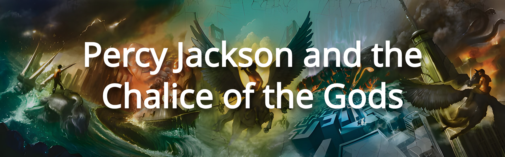

What Is It About?
Percy Jackson The Chalice of the Gods is based around a high school kid who is a demigod trying to get into college, but it turns out he needs three recommendation letters from three different gods.
What's The Plot?
- Percy Jackson needs three recommendation letters from three different gods.
- Percy Jackson is trying to get into college and thus needs three recommendation letters, as he was told this by his father (Poseidon).
Why Should You Read It?
The plot of this book is quite good. Percy Jackson has to get three recommendation letters to get into college. Along the way, he meets three gods: Iris, Hebe, and Geras. He needs to find the Chalice of the Gods, which Ganymede (the Cupbearer of the Gods) has sent him to retrieve when an unknown theif has stolen it. Will he find out who (I can't include too many spoilers)?
Sources: